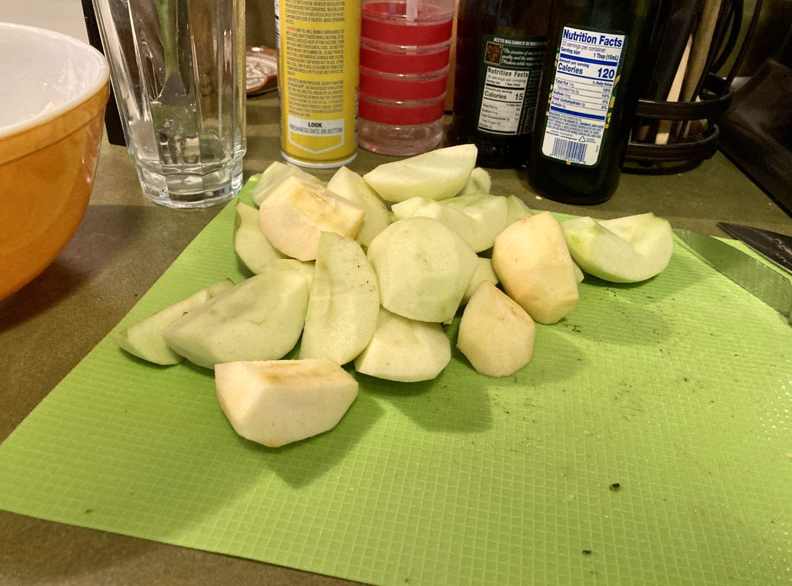

Pie 10: Dutch Apple
2023-09-02Filling and crust recipe from King Arthur Baking.
Taste:
Difficulty:
Vibes:
Suggested pairings: flatbread pizza
Given our ongoing, multi-month obsession with pie, it should be no surprise that Katie Beth asked me not to make her a birthday cake. Instead, she wanted an apple pie, her favorite kind. I chose not to try a new recipe this week to ensure her birthday pie was excellent. This tried-and-true King Arthur recipe is one of my favorites because of the delicious crumble topping. And yes, this is another Pennsylvania Dutch pie.
I was planning to mix Granny Smith apples with some red ones we already had, but the red ones were a bit mushy or mealy so I only used two. It was a LOT of apples--about 8 cups. I sliced them thin to make sure they wouldn’t be crunchy after baking.
The crust was a pretty basic shortening type but the crumble was made with finely chopped cold butter instead of melted butter, which is unusual. I don’t know enough about pie theory to explain what the difference would be.
The completed uncooked pie was very tall. Apple pies always shrink a lot, but this one seemed to do that more than most. Pie’s aren’t like cakes; almost never will they include any chemical leavening agent or yeast. That means most pies will either shrink (like this apple pie) or stay roughly the same shape (like most juicy fruit pies). The only pies I can think of that grow are custard pies which puff up in the oven but then collapse as they cool. If you have any recipes for pies that rise in the oven, let me know.
Before dinner on Saturday, when we celebrated KB’s birthday, we went to a local board game cafe called Hexagon Alley and spent a while playing their games. Afterwards, we went back to our apartment and made naan pizzas, then brought out the pie. I didn’t have 22 candles so I only put 2 and 2 in. On the bright side, Katie Beth easily blew them out in one breath. Hopefully she had made a good wish! If it was for a tasty slice of pie I can assure you, dear reader, that it was quickly granted.